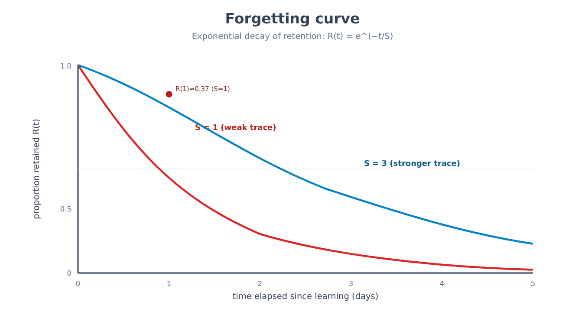
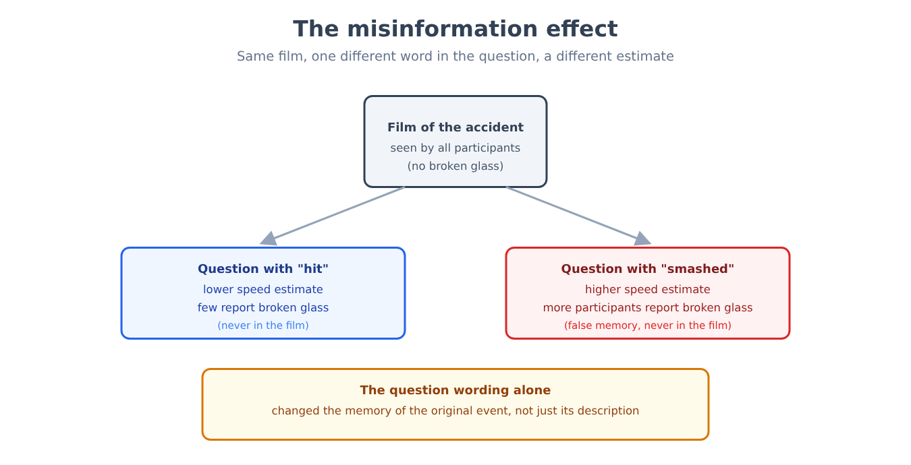
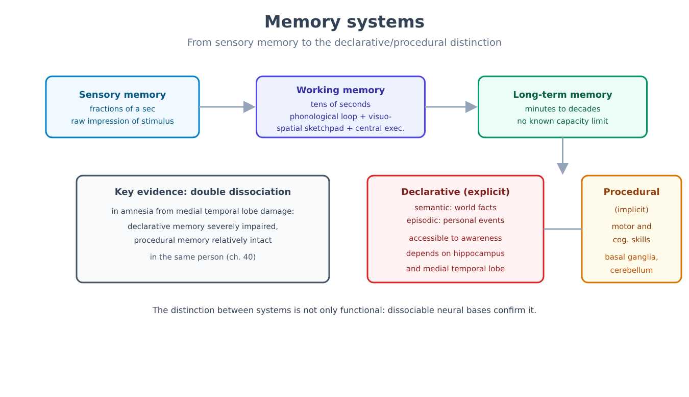
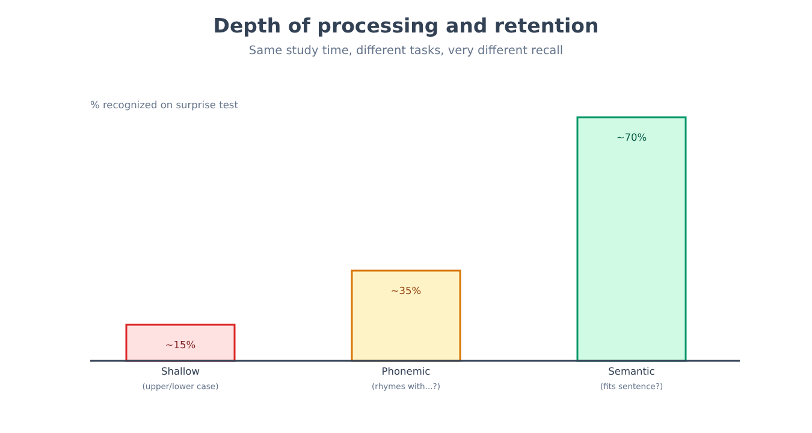
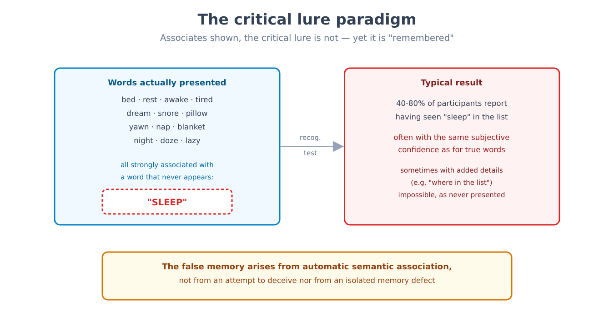
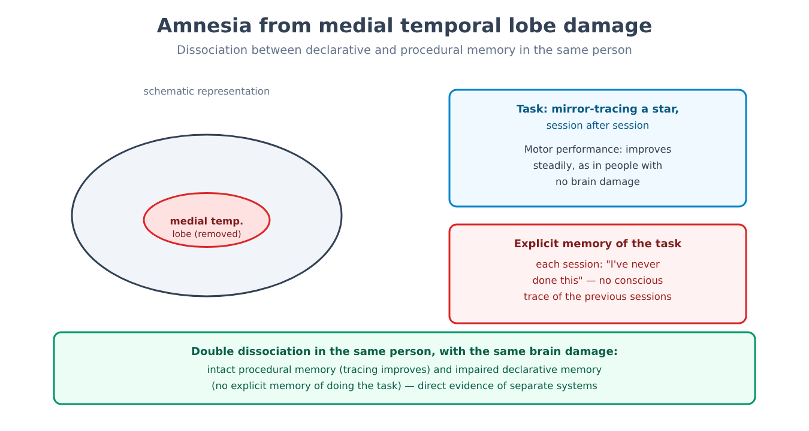

Part VI. Memory and learning
Chapter 34 — The first experiments on memory
[IN A NUTSHELL]
Memory seems the territory least suited to the experimental method: how do you measure something that happens inside a person's head, with no way of observing it directly? This chapter presents the first successful attempt — an experimenter who studied himself for years, managed to put forgetting into numbers, and discovered a regularity that still underlies every technique of learning spaced out over time.
A problem that seemed to have no possible quantitative answer
Toward the end of the nineteenth century, memory had already been an object of philosophical reflection for millennia, but not of measurement. The problem was not a lack of interest: it was the lack of a method. Remembering a poem, an event, a face depends on an enormous number of uncontrollable factors — how interested the person was, what they already knew about the subject, how many other times they had encountered similar content. To measure forgetting cleanly, one needed material with no prior meaning: something nobody had ever learned before, in any form.
The solution was the construction of an artificial material: nonsense syllables, consonant-vowel-consonant sequences devoid of meaning in any language known to the person studying them (for example "ZUP", "REL", "TOK"). Thousands of combinations of this kind were generated, shuffled, and used as material to be learned by heart in lists of controlled length.
[THE EXPERIMENTAL DESIGN]
The method, applied by the experimenter (Hermann Ebbinghaus, first systematic study of memory, 1885) to himself in thousands of sessions over several years, worked like this: a list of nonsense syllables was read aloud at a constant pace, repeating the whole list until it could be recited perfectly from memory once. The number of repetitions needed to reach this criterion was recorded. After a controlled time interval — which could range from twenty minutes to a month — the same list was relearned to the same criterion, and the number of repetitions needed was recorded again. The difference between the two measures is the savings: if the list had been forgotten entirely, the number of repetitions needed to relearn it would have been identical to the first learning (zero savings); if something had remained, relearning would be faster, in proportion to how much had remained. Savings is therefore an indirect but quantitative measure of how much has been retained, even when the person cannot consciously recite anything of the original list.
Repeating this procedure at increasing time intervals, an extremely regular curve emerged: the forgetting curve. The loss of information is not linear in time: it is very rapid in the first hours — much of the savings has already disappeared within the first day — and then progressively slows down, remaining almost flat after a few weeks. Material that survives a month tends to remain substantially stable for much longer.
[FORMULA]
An approximate but useful description of the forgetting curve is an exponential decay:
R(t) = e^(−t / S)
Where:
• R(t) is the proportion of material retained (measured, for example, through savings) at time t after the original learning.
• t is the time elapsed since learning, in any consistent unit (here: days).
• S is the memory trace strength, a parameter representing how stably the information was encoded: the larger S is, the slower the decay.
• e is the base of natural logarithms (≈2.718).
Worked example. With a trace of strength S = 1 day (weak learning, such as a list read only once), after t = 1 day the proportion retained is:
R(1) = e^(−1/1) = e^(−1) ≈ 0.37
A little more than a third remains after a single day. After t = 3 days, with the same trace strength:
R(3) = e^(−3/1) = e^(−3) ≈ 0.05
About 5% remains after three days: the bulk of the loss has already occurred in the first twenty-four hours, a pattern the model captures well in the first day. The exponential model, however, describes only the initial drop well: in real data the tail is slower, and a power function fits better over the long term. More robust learning (for example, obtained by repeating the material several times, or by distributing the repetitions over time) corresponds to a higher value of S, which lengthens the tail of the curve without changing its general shape.

Why repeating only once is not enough, and why spacing repetitions works better than massing them
The same experimental setup made it possible to isolate a second result, equally solid and with direct practical consequences: for the same total number of repetitions, distributing the repetitions over time (for example, one a day for a week) produces markedly better long-term retention than concentrating them all in a single session (for example, seven repetitions in a row). This result — the spacing effect — is among the most replicated in all of cognitive psychology, and holds across very different materials: word lists, historical facts, foreign-language vocabulary, motor procedures.
[NUMBERS]
In controlled laboratory studies, the difference in retention after several weeks between spaced and massed learning (for the same total study time) amounts in many laboratory studies to several percentage points, up to more than ten, of additional material correctly retrieved; the optimal spacing interval depends on how long one wants to remember, and grows with it. The most widely accepted explanation today is not a single mechanism but a combination: each spaced repetition requires a slightly greater retrieval effort (because the trace has meanwhile weakened a little), and this retrieval effort strengthens the trace more than an immediate repetition, when the information is still fully accessible and therefore requires little cognitive work to be repeated.
The principle was not entirely unknown before these experiments — teachers and pupils had probably sensed it for centuries — but its first rigorous quantification, with a reproducible curve and an explicit method for measuring it, is what made it possible to build on it: from the spaced repetition techniques used today in language learning to software that automatically schedules the next repetition according to how much time has already passed since the last one.
[MIND THE LEAP]
Nonsense syllables were chosen precisely to eliminate meaning — but this also means that results obtained with this material do not automatically transfer to material that is rich in meaning, organized, and connected to prior knowledge. The general shape of the curve (fast at first, then slower) is also found with meaningful material, but the absolute timescales are different, often much slower, because meaning offers multiple hooks for retrieval that nonsense syllables cannot offer. Chapter 3 already introduced this problem in general terms, when discussing the ecological validity of laboratory experiments: here is a direct and concrete example of that tension, not an isolated exception.
[KEY POINT OF THE CHAPTER]
• Nonsense syllables allowed the first quantitative measurement of forgetting, through the savings method in relearning.
• The forgetting curve describes rapid decay in the first hours, followed by progressive slowing — approximable by an exponential decay, R(t) = e^(−t/S).
• The spacing effect shows that repetitions distributed over time produce better long-term retention than an equal number of massed repetitions, with an advantage that in many studies ranges from a few to more than ten percentage points of additional material retained.
• Results obtained with meaningless material do not automatically transfer, in absolute terms, to meaningful material — a limit of ecological validity to keep in mind, not a flaw of the method.
Chapter 35 — Memory as reconstruction
[IN A NUTSHELL]
Common intuition treats memory as a recording: an event happens, it is "saved", and remembering it means "reopening the file". This chapter explains why this image is wrong in substance, not just in detail: every act of retrieval is an active process of reconstruction, which uses general knowledge to fill the inevitable gaps of an incomplete trace — and which can therefore introduce distortions that are systematic and predictable, not random.
A schema can change a memory without the person noticing
The first systematic study of the reconstructive nature of memory (Frederic Bartlett, study on the serial reproduction of a story, 1932; the procedure was informal, without statistical analysis, and the distortions turned out to be smaller when accuracy was emphasized) used as its material a story taken from the folklore of a culture distant from that of the participants, full of elements that did not fit their usual narrative expectations (unexplained supernatural events, a nonlinear structure, unfamiliar proper names).
[THE EXPERIMENTAL DESIGN]
The story was read to the participants twice, and they were then asked to reproduce it from memory at increasing intervals — from a few minutes to several months later, in some cases repeating the reproduction several times with the same person (repeated reproduction). Comparing successive versions with the original, a consistent pattern of distortions emerged, not random but systematic: elements that were unfamiliar or inconsistent with the schema — the structure of preexisting expectations about how a story "should" be built — were omitted, simplified, or transformed into something more familiar and consistent with the participant's culture. An unexplained supernatural detail tended to disappear in successive reproductions, or to receive a rational explanation never present in the original, added by the participants themselves without being aware they had done so.
This result — known as the rationalization effect within a broader effect of schematic reconstruction — showed that a memory was neither a faded copy nor a reproduction that stays faithful to the original: it was an account actively reconstructed at each reproduction, using the available schema to fill the gaps and make the story more sensible according to one's own categories, even at the cost of systematically departing from the facts.
Questions can create memories of things that never happened
A second line of research (Elizabeth Loftus and John Palmer, experiment on the misinformation effect, 1974), developed decades later with much more controlled methods, showed that reconstruction can be influenced not only by general preexisting schemas but by specific information introduced after the event — a phenomenon called the misinformation effect.
[THE EXPERIMENTAL DESIGN]
Participants are shown a short film of a traffic accident. Immediately afterward, they answer questions about what happened: half the participants are asked "how fast were the cars going when they hit each other?", the other half the same question but with a different verb, for example "when they bumped into each other?" or "when they smashed into each other?". The mere choice of verb in the question — an apparently irrelevant linguistic detail, not false information declared as such — systematically changes the reported speed estimate: verbs implying a more violent impact produce higher speed estimates. In a later variant, participants who had been asked with the verb "smashed" were then asked, a week later, whether they had seen broken glass in the film (the film showed none): this group reported having seen broken glass in a significantly greater proportion than the group asked with a more neutral verb.

Misleading information introduced after the event — in the question itself, not in an explicit attempt to deceive — is incorporated into the memory of the original event, to the point of producing memories of details never actually observed. This does not mean that memory is equally unreliable in every circumstance: it means that it is susceptible to a specific and predictable type of distortion, particularly relevant whenever someone is questioned repeatedly about the same event, with questions phrased in slightly different ways — the typical situation of a police interrogation or courtroom testimony.
[COMMON BELIEF]
The idea that memory works like a video camera — faithfully recording every detail of an experience, available to be "replayed" with the right technique (for example, hypnosis) — remains very widespread, even among professionals who work with testimony. The available experimental data clearly contradict this image: the memory of an event is reconstructed each time it is retrieved, using both the original trace (which may be incomplete or degraded) and subsequent information, general schemas, and expectations — with the result that after repeated questioning, suggestion, or the passage of time, the subjective confidence with which a person reports a memory is not a reliable indicator of its objective accuracy (under uncontaminated conditions, at the first test, initial confidence is instead a fairly good indicator): a completely reconstructed and false memory can be reported with the same, or greater, subjective confidence as an accurate one.
The link between reconstruction and the production of entirely false memories — not merely distorted in their details, but invented in substance — will be treated in full in chapter 39, together with its implications for courtroom testimony and therapeutic practice.
[KEY POINT OF THE CHAPTER]
• Memory is not a faithful recording but a process of active reconstruction, which takes place at every single act of retrieval, not only at the moment of encoding.
• Preexisting schemas guide reconstruction, producing systematic omissions and rationalizations of elements inconsistent with the rememberer's cultural expectations.
• The misinformation effect shows that information introduced after the event, even through the mere wording of a question, can be incorporated into the memory of the original event.
• After suggestion or repetition, the subjective confidence with which a memory is reported is not a reliable indicator of its accuracy — a principle taken up in full in chapter 39 in connection with false memories.
Chapter 36 — Stores and systems
[IN A NUTSHELL]
"Memory" is not a single faculty but an umbrella term for different systems, with different properties and — as shown by clinical cases that chapter 40 will treat in full — at least partly separable neural bases. This chapter sets out the architecture of these systems: how long they retain information, how much they can hold, and what distinction separates knowing what from knowing how.
Three stores with very different properties
A first model, influential for decades, distinguishes memory according to how long information remains in it. Sensory memory retains a raw impression of the sensory stimulus for a fraction of a second — enough to perceive continuous motion in a series of frames, or to still "hear" for an instant a sound that has just ended. Short-term memory, or more properly working memory in its more recent conception, retains a limited amount of information for tens of seconds, unless it is actively rehearsed or processed. Long-term memory retains information for periods ranging from minutes to decades, with a capacity that, as far as is known, has no measurable practical limit.
The capacity of short-term memory was long described by the approximate figure of "seven items plus or minus two" — the number of digits, letters, or unrelated words a person can repeat immediately after hearing them only once. Later research revised this estimate downward, indicating a limit closer to four items when the possibility of grouping information into larger units (chunking) is excluded: Miller himself, in the 1956 paper from which the figure of seven originates, observed that the limit concerned groupable units (chunks), not single items; the estimate of about four, proposed by Cowan in 2001, nonetheless remains debated (between three and five, depending on the author). Chunking itself — grouping individual items into larger meaningful units (for example, remembering a phone number as three blocks rather than ten isolated digits) — remains in any case the most effective way to increase the actual amount of information that can be retained, without changing the number of available "slots".
Working memory is not a passive store
The model of short-term memory as a simple temporary store has progressively been replaced by models of working memory, which describe it as an active system with specialized components that manipulate information, not merely hold it. An influential model (Alan Baddeley and Graham Hitch, 1974, with later revisions) distinguishes a phonological loop, dedicated to verbal and auditory information, a visuospatial sketchpad, dedicated to visual and spatial information, and a central executive that coordinates the two systems and governs the allocation of their attentional resources — connecting directly to the mechanisms of selective attention discussed in chapter 30. Later revisions of the model added an episodic buffer, a system that integrates information from the two subsystems with long-term memory into richer temporary representations — necessary, for example, to understand a complex sentence that requires holding together sound, meaning, and context while it is being heard.
[THE EXPERIMENTAL DESIGN]
One of the most direct pieces of evidence for separate components for verbal and visuospatial information is the dual task: asking a person to perform two tasks simultaneously, one verbal (for example, repeating a sequence of numbers aloud) and one visuospatial (for example, following with the eyes a dot moving on a screen while maintaining a mental representation of its trajectory). If the two tasks shared the same limited resource, performing them together should worsen performance on both, comparably to combining two tasks of the same type (for example, two verbal tasks). The results systematically show the opposite pattern: two tasks of the same type (verbal with verbal, spatial with spatial) interfere strongly with each other, while a verbal task and a spatial task performed together impair each other much less — direct evidence of at least partly separate resources, not of a single shared store.
Knowing what and knowing how are different systems
A second distinction, orthogonal to the first, divides long-term memory according to the type of content. Declarative memory, or explicit memory, concerns facts and events accessible to conscious awareness and reportable verbally: it in turn includes semantic memory, for general knowledge about the world lacking a specific learning context (knowing that Rome is the capital of Italy, without remembering when one learned it), and episodic memory, for specific events located in the time and space of personal experience (remembering a particular birthday dinner). Procedural memory, or implicit memory, instead concerns motor and cognitive skills learned through practice — riding a bicycle, typing on a keyboard without looking at the keys — accessible only through performance, not through verbal description: someone who knows how to ride a bicycle can rarely describe in words how they keep their balance.
The strongest evidence for this distinction comes from clinical cases of severe amnesia, in which the ability to form new declarative memories is dramatically impaired while the ability to learn new motor skills remains relatively intact — the same person who does not remember ever having performed a motor task before can nonetheless improve progressively at that task, session after session, without any explicit awareness of the improvement. Chapter 40 will treat these cases in full, along with what they have taught us about the neural organization of memory.

[KEY POINT OF THE CHAPTER]
• Memory is organized into systems with different temporal properties: sensory (fractions of a second), working (tens of seconds without active rehearsal), long-term (from minutes to decades).
• The classic estimate of "seven items plus or minus two" for working memory capacity has been revised downward (about four ungrouped items); chunking remains the main way to increase the amount of information that can be retained.
• Current models describe working memory as an active system with separate components (phonological loop, visuospatial sketchpad, central executive, episodic buffer), not as a single passive store.
• Long-term memory divides into declarative (facts and events, accessible to awareness) and procedural (skills, accessible only through performance) — a distinction with solid neural bases, treated in full in chapter 40.
Chapter 37 — Encoding, consolidation, retrieval
[IN A NUTSHELL]
Why do some experiences stay imprinted for decades while others vanish within minutes? This chapter explains what makes a memory trace more or less durable at the moment of encoding, how an initially fragile trace becomes stable over time, and why the way information is retrieved can, paradoxically, strengthen it more than simple review.
Not all processing produces the same memory
A central principle, now well established, is that the quality of retention depends less on the time spent studying a material and more on the type of processing it undergoes — the so-called levels of processing (Fergus Craik and Robert Lockhart, 1972). Processing a stimulus at a shallow level (for example, judging whether a word is written in uppercase or lowercase) produces a weak trace; processing it at a phonological level (judging whether it rhymes with another word) produces an intermediate trace; processing it at a semantic level (judging whether it fits the meaning of a sentence, actively connecting it to knowledge already possessed) produces the most durable trace, for the same total time devoted to the task.
[THE EXPERIMENTAL DESIGN]
Participants are presented with a list of words, with a different task randomly assigned for each word: for some words they only have to judge whether they are written in uppercase; for others, whether they rhyme with a given word; for still others, whether they correctly complete the meaning of a sentence. Participants are not told that they will later have to remember the words: the processing task is presented as the only goal (incidental learning). In a surprise recognition test, administered after the list, semantically processed words are correctly recognized in a clearly higher proportion than those processed only at the graphic or phonological level — even though no group had the explicit intention of memorizing anything. Retention depends on the depth of cognitive processing, not on the declared intention to remember.
A second, complementary principle is that retrieval works better when the conditions at the time of retrieval resemble those present at the time of encoding — context-dependent memory. Material learned in a certain physical environment, or in a certain internal state (for example, a particular level of emotional arousal), is retrieved more easily in a similar environment or state — a principle with direct implications for study practice (varying the study context reduces dependence on a single environment) and for testimony (taking a witness back to the scene of an event can facilitate recall, with due caution about the risk of suggestion already discussed in chapter 35).
Remembering strengthens more than reviewing
A result that has substantially changed practical recommendations about studying is the testing effect: undergoing an attempt at active retrieval of information (for example, answering an open-ended question) produces better long-term retention than an equal amount of time spent passively rereading the same material — even when, at the time of the initial test, the person gets the answer wrong and must then see it corrected.
[NUMBERS]
In studies that directly compare the two strategies for the same total time invested, the advantage of the testing effect over rereading alone, measured a week or more after initial study, is of medium size in meta-analyses (g around 0.5), larger with feedback and over intervals of days; in a classic experiment, about 61% of the material was remembered after a week with retrieval practice versus about 40% with rereading (with very short-delay tests, on the other hand, rereading can win). The advantage tends to grow the longer the interval between study and final test — the same general pattern already encountered with the spacing effect in chapter 34, whose mechanism the testing effect partly shares: active retrieval, like spaced repetition, requires a cognitive effort that rereading alone does not, and this effort strengthens the trace.
Finally, the phase between encoding and retrieval is not a passive interval in which the trace simply persists. Consolidation is the process — which takes time: hours for consolidation at the synaptic level, months or years for consolidation at the level of the brain systems involved, as already anticipated in discussing the role of sleep in chapter 26 — through which an initially fragile trace, vulnerable to interference, becomes progressively more stable.
Consolidation at the synaptic level has a well-studied cellular correlate: long-term potentiation (LTP), encountered in chapter 25. In its early phase LTP lasts from one to a few hours and does not require the synthesis of new proteins; the late phase, much longer lasting, does require it, and in rodents blocking protein synthesis immediately after learning prevents the memory from stabilizing. The best-known causal test concerns the NMDA receptor from chapter 25: rats given a drug that blocks it during training in a water maze (Morris and colleagues, 1986) did not learn to locate the hidden platform, although they swam and saw normally. The result shows that these processes are necessary for that type of learning; it does not show that LTP is the only mechanism of memory, and the extension to humans remains largely inferential. A more recent and in some ways surprising finding is that consolidation is not a one-way, definitive process: when an already consolidated memory is reactivated (for example, by consciously retrieving it, or even just by being exposed to an element strongly associated with it), the trace can temporarily return to a labile state, similar to that of initial encoding, and must then be reconsolidated. During this window of lability, the trace can be modified — strengthened, weakened, or in some animal studies even pharmacologically erased — in a way that would not be possible for a memory that has not just been reactivated.
[CONTROVERSIAL QUESTION]
The phenomenon of reconsolidation, well documented in animal studies with precise pharmacological interventions at the moment of reactivation, has raised high expectations for the treatment of traumatic memories in humans: if a memory becomes temporarily modifiable each time it is reactivated, in principle it could be weakened in a targeted way during that window. Attempts to translate this result into reliable clinical treatments for humans, however, have produced far more inconsistent results than the animal studies: it is not clear which conditions (dose, timing, type of reactivation) are needed to reliably open the window of lability in a human brain, and several attempts to replicate the first promising results have not achieved the same effects. The basic mechanism — that reactivation can make a memory temporarily modifiable — is now considered solid; its practical and reliable clinical applicability remains, at the current state of research, a goal not yet reached rather than an established technique.

[KEY POINT OF THE CHAPTER]
• The depth of processing at the moment of encoding (shallow, phonological, semantic) determines the quality of retention more than the total time devoted to study.
• Retrieval works better when the context at the time of retrieval resembles that of encoding (context dependence).
• The testing effect shows that active retrieval strengthens memory more than passive rereading, with a medium-sized effect, larger over intervals of days.
• Consolidation is not definitive: a reactivated memory can become temporarily labile again and require reconsolidation, a phenomenon solid in animal studies but not yet translated into a reliable clinical application for humans.
Chapter 38 — Forgetting and its mechanisms
[IN A NUTSHELL]
Forgetting is not a single phenomenon with a single cause. This chapter sets out three main mechanisms, alongside simple decay, through which information becomes inaccessible or is actively made so — and takes up, with different empirical tools, a problem already encountered in chapter 10 in connection with psychoanalytic repression.
Interference, not just decay
For much of the twentieth century, the dominant explanation of forgetting was not the simple decay of the trace with the passage of time, but interference: the loss of accessibility of a memory caused by the presence of other memories, not by time itself. Two directions are distinguished: proactive interference, in which earlier learning disrupts the memory of more recently learned material (for example, struggling to remember a new phone number because the old one keeps intruding), and retroactive interference, in which later learning disrupts the memory of previously learned material (learning a second foreign language that makes it temporarily harder to recall vocabulary from the first).
[THE EXPERIMENTAL DESIGN]
A classic design for isolating retroactive interference compares two groups learning the same list A of paired associate words. One group then learns a second list B, with the same stimuli but different responses (for example, if in list A the pair was "table-chair", in list B it might be "table-lamp"); the other group, in the same time interval, performs an unrelated task (for example, an arithmetic test). In the final test on the original list A, the group that learned the interfering list B shows significantly worse recall than the control group, even though both groups had the same time interval between original learning and test — the only difference is what they did during that interval, not how much time passed.
A second mechanism, distinct from interference between different traces, is retrieval-induced forgetting (Michael Anderson, Robert Bjork, and Elizabeth Bjork, 1994): the simple act of successfully retrieving a memory can make it temporarily harder to retrieve other related memories, associated with the same category or the same context — as if the selective retrieval of one item actively suppressed its competitors, rather than merely strengthening the retrieved item without affecting the others.
The direct suppression of an unwanted memory
A third mechanism, more controversial, supported by a good deal of experimental data but with mixed replicability (some laboratories have not reproduced the effect), is the directed suppression (the "think/no-think" paradigm of Michael Anderson and Collin Green, 2001) of retrieval: the possibility of actively preventing, through intentional effort, a specific memory from reaching awareness when one encounters a cue that would normally evoke it.
[THE EXPERIMENTAL DESIGN]
Participants are taught an association between pairs of words (for example "ordeal-roach"). Subsequently, only the first word of the pair (the cue) is presented, with a different instruction depending on the condition: on some trials, participants are asked to think actively of the associated word (think); on others, they are explicitly asked to prevent that word from coming to mind (suppress), without replacing it with anything else. In a final memory test on the whole list, pairs in the suppression condition are remembered significantly worse than both the actively recalled pairs and — the crucial point of the design — pairs never reactivated at all during the intermediate phase. The mere fact of having received the cue and having made an effort not to think of the associated response produces a measurable forgetting effect, greater than simple lack of rehearsal.
Neuroimaging studies conducted during this task show a pattern consistent with an active control mechanism: during suppression, there is increased activation in prefrontal regions associated with cognitive control, accompanied by reduced activation in regions of the medial temporal lobe (including the hippocampus) typically involved in retrieval — a pattern compatible with the idea that a top-down control mechanism actively inhibits the retrieval process itself, not just its behavioral expression.
[DOES IT STILL HOLD?]
The link between this experimental mechanism of voluntary suppression — demonstrated with neutral material, word pairs with no emotional significance for the participant — and the mechanism of psychoanalytic repression described in chapter 10, applied to contents charged with personal meaning and threatening to psychological equilibrium, remains an extension, not a demonstrated equivalence. The experimental task shows that intentional and conscious suppression of retrieval is possible and has measurable consequences for later memory: this is a solid result. Whether the same mechanism, extended to emotionally charged contents and made automatic and unconscious over time, corresponds exactly to the process of repression hypothesized by psychoanalytic theory remains a plausible hypothesis but one not directly verified — the available experiments show that a mechanism of motivated suppression exists in the human cognitive repertoire, not that it is that mechanism operating in the clinical cases to which psychoanalytic theory referred.
[KEY POINT OF THE CHAPTER]
• Interference, not just decay over time, is responsible for much of forgetting: proactive (the old disrupts the new) and retroactive (the new disrupts the old).
• Retrieval-induced forgetting shows that successfully remembering one item can temporarily suppress other related memories.
• Directed suppression demonstrates experimentally that a memory can be made temporarily less accessible through intentional effort, with a consistent neural correlate (increased prefrontal control, reduced activation in the medial temporal lobe).
• The link between experimental directed suppression and the psychoanalytic repression of chapter 10 is a plausible extension, not a demonstrated equivalence: the two mechanisms have not yet been identified as the same process.
Chapter 39 — False memories
[MIND THE LEAP]
This chapter deals with the experimentally demonstrated possibility of producing memories, reported with conviction, of events that never happened. The fact that a memory can be artificially constructed in the laboratory, with known and documented methods, does not imply — and this chapter does not claim at any point — that a specific memory reported by a real person, inside or outside a therapeutic context, is false: establishing the accuracy of a single particular memory requires independent evidence, case by case, not a general inference from these laboratory results.
[IN A NUTSHELL]
Chapter 35 showed that memory reconstructs and can be distorted. This chapter goes further: it shows that it is possible, with controlled experimental methods, to produce the detailed and subjectively convincing memory of an entire event that never happened — with direct, and delicate, implications for courtroom testimony and for certain therapeutic practices.
A laboratory paradigm for reliably producing false memories
The most widely used and most replicated method for producing false memories in the laboratory (a paradigm devised by James Deese, 1959, and taken up in its now-standard form by Henry Roediger and Kathleen McDermott, 1995) rests on a simple principle: exploiting the automatic semantic association between words to generate the "memory" of a word never presented.
[THE EXPERIMENTAL DESIGN]
Participants are presented with a list of words all strongly associated with a single critical word, which however never appears in the list (for example: "bed, rest, awake, tired, dream, snore, pillow, yawn, nap..." — all associated with the critical word "sleep", absent from the list). Shortly afterward, in a recognition or free recall test, a considerable proportion of participants report having seen the critical word in the original list, often with a level of subjective confidence equal to or higher than that reported for the words actually presented — and in many cases with the feeling of remembering having heard it, not just of finding it familiar, even though the word was never presented.
[NUMBERS]
In the standard version of this paradigm, the proportion of participants who falsely report the critical word as presented varies greatly with the list used and the type of test: with the most effective lists, about 40-60% of participants recall the critical word and an even larger share recognize it as presented, while with other lists the rate drops to about 10%. The effect is among the most consistent in experimental memory research, replicated in hundreds of studies with different materials and populations.

A second line of research (Elizabeth Loftus and Jacqueline Pickrell, study of the implanted memory of being lost in a shopping mall, 1995), with an aim more directly relevant to therapeutic and legal contexts, showed that it is possible to implant memories of entire autobiographical episodes that never happened, not just of single words.
[THE EXPERIMENTAL DESIGN]
Participants are presented with a collection of short accounts of events from their childhood, obtained by interviewing a close relative: three events that really happened, and a fourth event invented by the researchers but made plausible (for example, getting lost in a shopping mall as a child, an event chosen because it is common but not verified as having happened to that specific participant). Participants are asked to write down everything they remember about each event, including the invented one, in several successive sessions over a few weeks. A non-negligible portion of participants — between a quarter and a third, depending on the study — come to report a "memory" of the invented event, often progressively enriching it with sensory and emotional details (who was there, how they felt, what they were wearing) in later sessions, with no awareness that the event never happened.
This second result shows that implanting false memories does not require particularly elaborate or manipulative techniques: the mere combination of repeated suggestion from an authoritative source (the researchers, presented as holders of reliable family information) and a repeated imaginative effort of reconstruction can be enough, in a substantial minority of cases, to produce a memory that the participant reports with conviction, even though in the original study the implanted memories were on average less clear and less rich than the true ones.
The implications, with the caution they require
These results have had a direct influence on two practical areas. In the first, eyewitness testimony, they contributed to a revision of recommended investigative procedures — for example, avoiding questions that suggest an answer, and precisely documenting the exact wording of every question put to a witness, for the reason already seen in chapter 35 regarding the misinformation effect. The second, more delicate, concerns the debate on recovered memories in a therapeutic context — memories of events, in some cases of abuse suffered in childhood, that a person reports having recovered during therapy after years or decades of apparent absence from awareness.
[CONTROVERSIAL QUESTION]
This debate, often called the "memory wars" in the professional literature, pits against each other two positions both held by competent professionals, and neither position denies the solidity of the experimental data presented here. One position emphasizes that the data on false memories show a real and powerful mechanism, and that some therapeutic techniques historically used to "recover" repressed memories (hypnosis, repeated guided imagery, dream interpretation geared toward looking for abuse) share structural elements with the experimental paradigms that produce false memories in the laboratory — making some memories recovered with these techniques potentially unreliable, regardless of the therapist's intentions. The other position emphasizes that the forgetting and later recovery of authentic memories of childhood abuse is a phenomenon independently documented by cases with external corroborating evidence, and that treating every recovered memory as suspect risks discouraging people with real experiences from seeking help or from being believed. Both positions agree on one practical point: the mere subjective presence of a vivid and detailed memory, recovered or not, constitutes evidence neither of its accuracy nor of its falsity — evaluation requires, when possible, corroborating elements independent of the memory itself.
[KEY POINT OF THE CHAPTER]
• The critical word paradigm shows that it is possible to reliably produce, in the laboratory, false recognition of a word never presented, by exploiting automatic semantic association.
• Studies on the implantation of autobiographical memories show that a substantial minority of participants (a quarter to a third) can come to "remember" an entire invented childhood event, if it is repeatedly suggested by a source perceived as reliable.
• These results motivated a revision of procedures for collecting eyewitness testimony, to reduce the risk of involuntary suggestion.
• The debate on memories recovered in therapy remains open among competent professionals on both sides; it is not the task of this chapter, nor possible in principle from these data alone, to establish the accuracy of a specific memory of a real person.
Chapter 40 — Amnesias
[IN A NUTSHELL]
Some of the most important findings on the architecture of memory come not from laboratory experiments on healthy people, but from a small number of clinical cases of severe amnesia, studied for decades. This chapter explains what these cases have taught — and why drawing general conclusions from a single case, however instructive, requires a specific methodological caution.
A surgical operation and an unexpected discovery
The most studied case in the history of cognitive neuroscience (the patient known in the literature by the initials H.M., operated on by William Scoville and later studied for more than forty years, first by Brenda Milner and then above all by Suzanne Corkin) concerns a patient who, in the mid-twentieth century, underwent bilateral removal of much of the medial temporal lobe, including the hippocampus, as a treatment for severe and otherwise uncontrollable epilepsy. The operation did reduce the frequency of seizures, but it produced an unforeseen and permanent side effect: an almost total anterograde amnesia — the inability to form new declarative memories (facts and events) from the moment of the operation onward, which persisted for the rest of his life, together with a partial retrograde amnesia for the years immediately preceding the operation.
[THE EXPERIMENTAL DESIGN]
The patient was studied in hundreds of experimental sessions over more than four decades. He could hold a normal conversation and keep information in working memory for as long as he paid continuous attention to it, but lost all trace of the information as soon as his attention was diverted: he met the same experimenter every day as if for the first time, even after years of repeated sessions. One of the most informative experiments confronted him with a motor task — mirror drawing a star, watching his own hand and the sheet reflected in a mirror, a task initially difficult for anyone. Session after session, his performance improved progressively, at the same rate as a participant without brain damage — but at each new session he stated that he had never done the task before, with no explicit memory of the previous sessions, even though the motor improvement clearly showed that something had been learned and retained.
This dissociation — intact procedural memory, impaired declarative memory in the same person, with the same brain damage — was the most direct and influential evidence for the distinction between multiple memory systems introduced in chapter 36, and established the critical role of the medial temporal lobe, and in particular of the hippocampus, in the formation of new declarative memories — but not in their long-term storage once consolidated elsewhere in the cortex, nor in motor learning, which depends on different circuits (in particular the basal ganglia).

What a single case can, and cannot, demonstrate
The value of this case for the understanding of memory is hard to overstate: it inspired decades of subsequent research and made it possible to formulate precise hypotheses, later verified with other methods (neuroimaging, animal studies, other clinical cases), about the neural organization of memory systems. For precisely this reason, however, it is also the case most often cited to illustrate a general methodological limit, already introduced in chapter 6 in connection with single-case dissociation: a single case, however informative, does not by itself allow one to distinguish between competing explanations with the same strength as a controlled experimental design with multiple participants.
[CONTROVERSIAL QUESTION]
This patient's brain damage was not cleanly and selectively limited to the hippocampus: it also included portions of the surrounding cortex and, according to the most recent reconstructions based on high-resolution magnetic resonance imaging carried out after his death, extended more widely than originally estimated on the basis of the surgical notes alone. This means that attributing with certainty every single feature of his memory profile to the hippocampus in isolation, rather than to the broader damaged medial temporal lobe system, requires caution: later cases with more selective and better documented damage, together with animal studies with surgically controlled lesions at precise sites, were needed to refine which specific components of the system were responsible for which aspects of the deficit. The case remains scientifically valuable precisely because it generated testable hypotheses — not because each of its individual anatomical features was by itself sufficient to demonstrate them.
A second type of amnesia, distinct in mechanism, is retrograde amnesia, the loss of memories formed before the onset of the damage, typically with a temporal gradient pattern: the memories closest in time to the damage are more likely to be lost than more remote ones, a pattern consistent with the idea, already encountered in chapter 37, that consolidation at the level of brain systems takes time — an older memory has had more time to be transferred to and stabilized in distributed cortical networks, less dependent on the hippocampus, and is therefore more resistant to later hippocampal damage than a newly formed memory.
[KEY POINT OF THE CHAPTER]
• Cases of severe amnesia from damage to the medial temporal lobe provided the most direct evidence for the distinction between declarative memory (impaired) and procedural memory (intact) in the same person.
• These cases established the critical role of the hippocampus in the formation of new declarative memories, distinct from the role of other structures in their long-term storage and from motor learning.
• A single case, however informative, does not by itself make it possible to isolate with certainty which specific structure is responsible for which function, because of the intrinsic imprecision of real brain damage compared with a controlled experimental lesion — a limit already encountered in chapter 6.
• Retrograde amnesia typically shows a temporal gradient, consistent with a long-term consolidation that progressively shifts memory traces toward less dependence on the hippocampus.